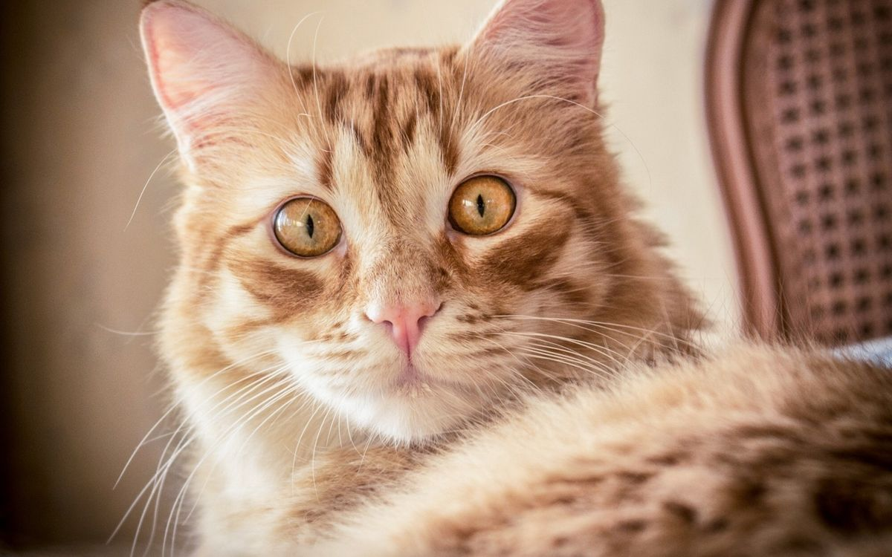

Animals!!!
Animals are categorized into two:
- Domestic Animals
- Wild Animals
Domestic Animals
These are animals that have been tamed and kept by humans
as a work animal,food source ,or pet.They include:
- donkey
- cat
- cows
- sheep
- dogs
- goats
Now,let's take a look at some domesticated animals
-
Dogs
Domestic dogs are mostly kept as pets,though many breed are capable of
surviving on their own,whether it's in a forest or on city streets.

-
Cats
Domestic cats are characterized by supple low-slung bodies,finely
molded heads,long tails that aid in balance,and specialized teeth and
claws that adapt them admirably to a life of active hunting.

-
sheep
sheep or domestic sheep (ovis aries)are domesticated,ruminant
mammals typically kept as livestock.

-
Wild Animals
These are mammals,birds fish or other creature of world nature endowed
with sensation and the power of voluntary motion.here
are some examples of wild animals are.
- lions
- hyena
- elephant
- zebra
-
lion
The a large cat of the genus panthera.it has a
muscular,broad-chested body,short rounded head,round ears,and a hairy
tuft at the end of its tail.

-
Hyenas
There are three hyena species-spotted,brown,and striped.
Spotted hyenas are the largest of the three.They are fairly large in
build and have relatively short torsos with lower hindquarters,and
sloping backs.They have excellent night-time vision and hearing.Hyenas
have long forelegs and a powerful neck and shoulders for dismembering
and caring prey.

-
cheetah
A cheetah is a large cat and native to Africa central Iran.It is the
fastest land animal,estimated to be capable of running at 80 to 128
km/h
cheeteh is the best animal a man can see